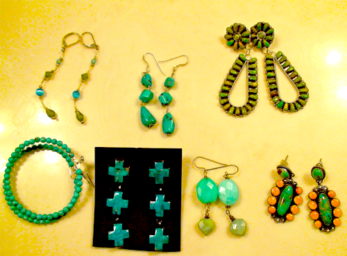

My husband, being the fireman that he is, answers 911 calls for a living. Fires, heart attacks, you name it… well, there are some emergencies that just don’t fall under his realm of expertise. That is when I step in, Outfit 911. You need me.. I’m here. What are your fashion emergencies? On a budget for a wedding or a hot date? Got a special event planned and you have no idea what to pick from your over-exploding closet full of options? Send me the deets and I’ll be your personal Stacey London and Clinton Kelly.
My good ole’ bud AK approached me with a style dilemma just the other day… an after wedding casual event with friends with a budget of $25.00 for anything new and an abundance of options from her existing and already fabulous wardrobe.
This is the email that I received from AK:

Ok, I need some opinions…I have the J. Crew Jackie cardigan in black, turquoise, coral, orange, bright green, and a light brown. The boots are from left to right: wine, black/red, camel/pink/navy (but the pink/navy won’t show). And I’ll be wearing jeans.
Tell me what you think in terms of a top….I had been thinking maybe something like this??? http://www.forever21.com/product.asp?catalog_name=FOREVER21&category_name=top_casual&product_id=2063568501&Page=4#
so then jewelry….tell me your thoughts. -AK
So I set out on a mission. I browsed the forever21 site of all things incredibly cheap and most of the time uber cute and found an adorably delicious bow tie top that just was beckoning to be bought and put under a lovely cardigan.
Lovely Top (Summer Bow Tank, $15.80) :

I suggested that AK go with turquoise earrings and she showed me her options at home:

My eyes were immediately drawn to the ORANGE on the bottom right… orange will be a lovely compliment to the green cardi. So.. here we have it folks. AK will be cute, casual and chic in the outfit we selected!

When I received this email.. it dawned on me… I get a lot of these emails: My sister looking for help planning her college graduation dress and accessories, friends asking for advice on what to wear to an upcoming shower or wedding. I like helping people find the right options for that special occasion and I would love to help you out too…. send your emails to me at der AT tipsysociety DOT com. I’ll be waiting to put your fashion fires out!


Recent Comments